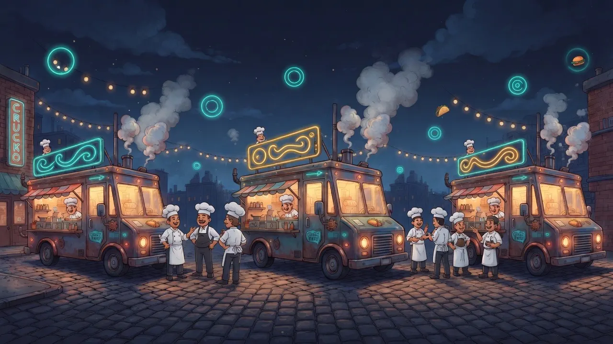

Community
National Food Truck Association
Association of food truck associations. Law, location, event management, and operator tutorials — the connective tissue between vendors and regional groups.

The Community
The organizations, educators, and support networks that make this industry worth fighting for. All free. All worth your time.
Industry Organizations
National and local groups advocating for mobile vendors, providing education, and building the professional network you deserve.
Community
Association of food truck associations. Law, location, event management, and operator tutorials — the connective tissue between vendors and regional groups.
Community
National Association for Street Food Vendors. Mentorship, live classes, and a community built for trucks, trailers, carts, and tents.
Community
Bay Area street-food markets and creator support. Weekly lots, catering, and a bench of operators who already live this schedule.
Community
Advocacy for street vendors. Policy, legal support, and a reminder that the lot is a workplace.
Community
Advocacy and crisis relief for restaurant and hospitality workers — including the people on the line in a truck.
Community
Food-handler and manager certification most health departments expect. Learn it once, carry it every stop.
Community
Free mentoring for small businesses. Useful when the truck is also the corporation.
Community
Sister program. Free bar inventory from the same house — voice walk, variance, POS, no subscription.
Inside this program
Install → walk → reconcile → home base. The kitchen-table version of the whole system.
What each instrument is, what it looks like, and how it fits the weekly rhythm.
Spreadsheets, POS files, load lists, food cost — practical writing, no upsell.